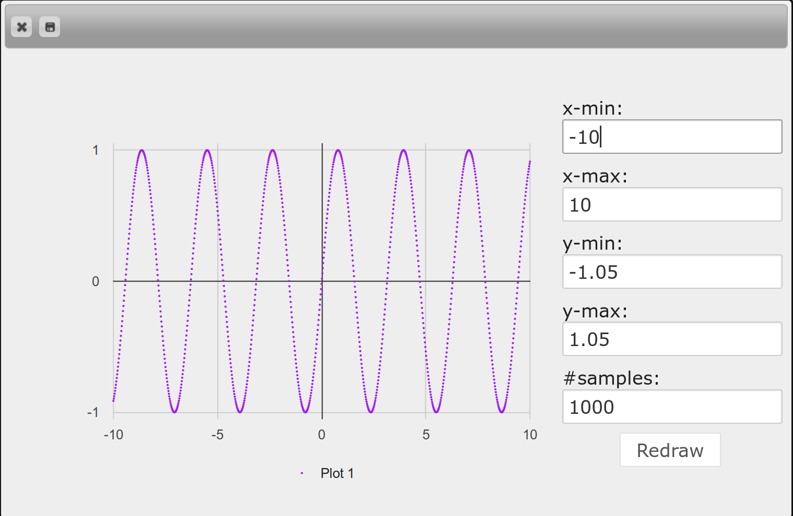
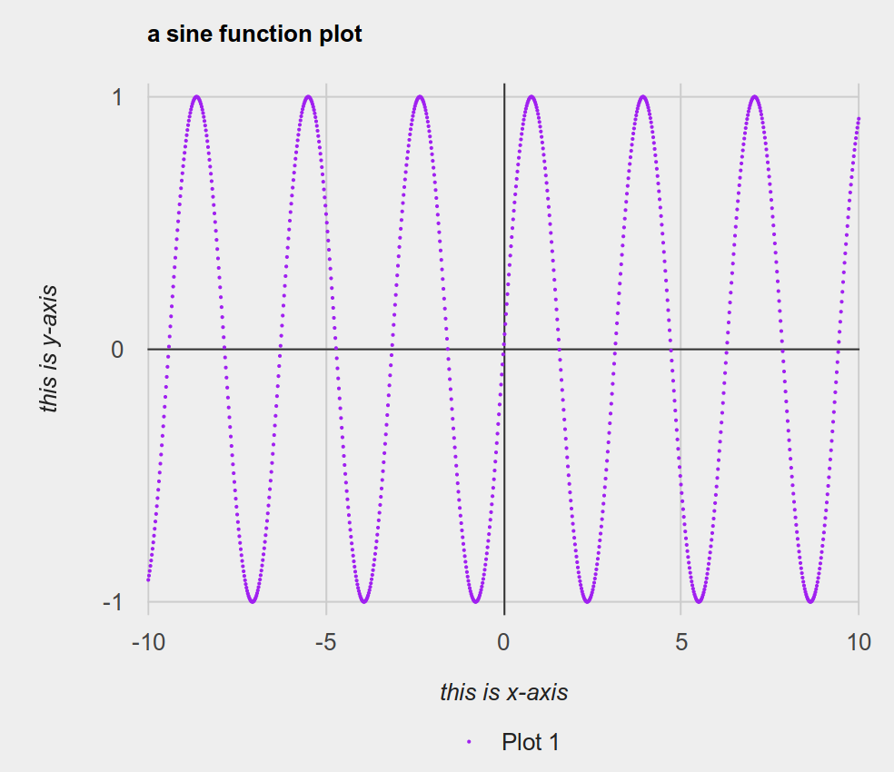
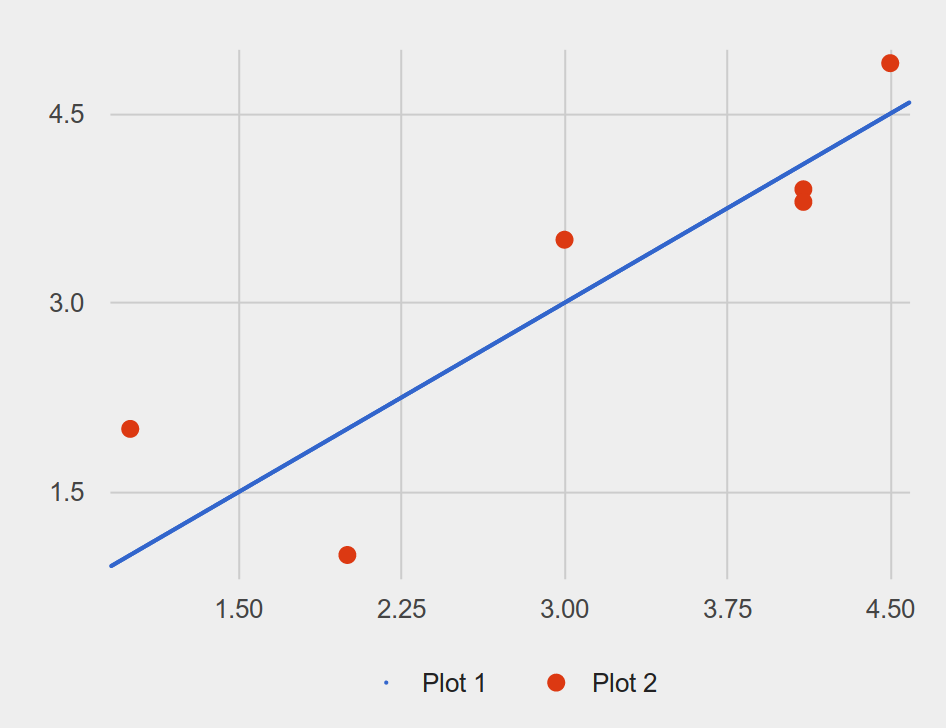

3.24 chart
This documentation assumes that your program begins with including the chart library and importing the image-structs library as follows:
include chart import image-structs as I
There are two steps to create a chart: first, creating DataSeries representing the information to be charted, and second, rendering DataSeries into a ChartWindow. We give examples of both steps below.
3.24.1 Creating a DataSeries
In order to visualize data as a chart, you must decide what type of chart (e.g., bar charts or pie charts; there are others detailed below) you want.
The combination of data with a chart type and (optional) chart-specific configurations is called a DataSeries. For example, your program might have population data about English native speakers in several countries, and your goal is to visualize that data as a bar chart. One reasonable starting point is to represent the data as a list of strings (country names) and a list of numbers (number of English native speakers):
countries = [list: "US", "India", "Pakistan", "Philippines", "Nigeria"] num-speakers = [list: 251388301, 125344736, 110041604, 89800800, 79000000]
Getting from this data to a data series is simple: use a chart constructor – here, the bar chart constructor from-list.bar-chart – to create a DataSeries:
a-pie-chart-series = from-list.bar-chart(countries, num-speakers)
As another example, consider the typical high-school math task of “graphing a function”, that is, plotting the values of a function for some range of inputs. Another chart constructor, from-list.function-plot, would create the relevant DataSeries:
fun some-fun(x): num-sin(2 * x) end # some arbitrary function a-function-series = from-list.function-plot(f)
So far, we have only constructed DataSeries without any additionnal configuration. DataSeries also exist to allow customizing individual plots. As a simple first example of this, suppose the function plot should be in a specific color. You might write:
colorful-function-series = a-function-series.color(I.purple)
You can also combine DataSeries creation and DataSeries customization together via chaining to avoid an intermediate variable:
fun some-fun(x): num-sin(2 * x) end # some arbitrary function colorful-function-series = from-list.function-plot(f) .color(I.purple)
There are also other customization options, described below, that can be chained onto the end of this expression to successively customize other details of the DataSeries.
We plan that the chart library should support the Table inferface too. Hence, each chart constructor will be provided under both from-list and from-table object. However, currently only the list forms (from-list) are supported.
3.24.2 Creating a ChartWindow
Given DataSeries, we can render it/them on a window using the function render-charts or render-chart. The functions construct a ChartWindow. From the example in the previous section:
fun f(x): num-sin(2 * x) end a-series = from-list.function-plot(f) .color(I.purple) a-chart-window = render-chart(a-series)
Once you have a ChartWindow, you can use its .display method to actually open up an interactive dialog: a-chart-window.display() will produce a dialog like this:

In addition to displaying the interactive dialog, the .display method will also return the rendered chart as an Image. If you only need the Image but not the interactive dialog, you should use the method .get-image instead of .display.
an-image = a-chart-window.get-image()
Just as DataSeries is an intermediate value allowing for the customization of individual plots, ChartWindow is an intermediate value allowing for the customization of the entire chart window. For example, charts ought to have titles and axis labels. These options do not make sense on individual plots; they are properties of the chart window as a whole. So we might write:
a-chart-window .title("a sine function plot") .x-axis("this is x-axis") .y-axis("this is y-axis") .display()
These customizations change the output from the previous image to the following:

3.24.2.1 Interactive Dialog
To close an interactive dialog, you can either click the close button on the top left corner, or press esc.
In addition to being able to obtain the chart as a Pyret Image, you can also save the chart image as a png file from the interactive dialog by clicking the save button which is next to the close button.
For some kind of charts (e.g., function plot) there will be a controller panel for you to adjust configurations of the chart window interactively.
3.24.3 Chart Constructors for List Interface
Constructing a function plot series from f. See more details at function-plot-series.
NUM_E = ~2.71828 f-series = from-list.function-plot(lam(x): 1 - num-expt(NUM_E, 0 - x) end)
Constructing a line plot series from xs and ys, representing x and y coordinates of points. See more details at line-plot-series.
a-series = from-list.line-plot( [list: 0, 1, 2, 3, 6, 7, 10, 13, 16, 20], [list: 18, 2, 28, 9, 7, 29, 25, 26, 29, 24])
Constructing a scatter plot series from xs and ys, representing x and y coordinates of points. See more details at scatter-plot-series.
a-series = from-list.scatter-plot( [list: 0, 1, 2, 3, 6, 7, 10, 13, 16, 20], [list: 18, 2, 28, 9, 7, 29, 25, 26, 29, 24])
- from-list.labeled-scatter-plot :: (
- labels :: List<String>,
- xs :: List<Number>,
- ys :: List<Number>
- )
- -> DataSeries%(scatter-plot-series)
Constructing a scatter plot series from xs and ys, representing x and y coordinates of points, and labels whose element representing a label for each point. See more details at scatter-plot-series.
a-series = from-list.labeled-scatter-plot( [list: "a", "b", "c", "d", "e", "f", "g", "h", "i", "j"], [list: 0, 1, 2, 3, 6, 7, 10, 13, 16, 20], [list: 18, 2, 28, 9, 7, 29, 25, 26, 29, 24])
Constructing a bar chart series from labels and values, representing the label and value of bars. See more details at bar-chart-series.
a-series = from-list.bar-chart( [list: "Pyret", "OCaml", "C", "C++", "Python", "Racket", "Smalltalk"], [list: 10, 6, 1, 3, 5, 8, 9]) # This data is obtained by randomization. They have no meaning whatsoever. # (though we did run a few trials so that the result doesn't look egregious)
- from-list.grouped-bar-chart :: (
- labels :: List<String>,
- value-lists :: List<List<Number>>,
- legends :: List<String>
- )
- -> DataSeries%(bar-chart-series)
Constructing a bar chart series. A value-list in value-lists is a list of numbers, representing bars in a label but with different legends. The length of value-lists must match the length of labels, and the length of each value-list must match the length of legends. See more details at bar-chart-series.
a-series = from-list.grouped-bar-chart( [list: 'CA', 'TX', 'NY', 'FL', 'IL', 'PA'], [list: [list: 2704659,4499890,2159981,3853788,10604510,8819342,4114496], [list: 2027307,3277946,1420518,2454721,7017731,5656528,2472223], [list: 1208495,2141490,1058031,1999120,5355235,5120254,2607672], [list: 1140516,1938695,925060,1607297,4782119,4746856,3187797], [list: 894368,1558919,725973,1311479,3596343,3239173,1575308], [list: 737462,1345341,679201,1203944,3157759,3414001,1910571]], [list: 'Under 5 Years', '5 to 13 Years', '14 to 17 Years', '18 to 24 Years', '25 to 44 Years', '45 to 64 Years', '65 Years and Over'])
Constructing a bar chart series based on the frequencies of elements in values. See more details at bar-chart-series.
a-series = from-list.freq-bar-chart( [list: "Pyret", "OCaml", "Pyret", "Java", " Pyret", "Racket", "Coq", "Coq"])
Constructing a pie chart series from labels and values, representing the label and value of slices. See more details at pie-chart-series.
a-series = from-list.pie-chart( [list: "Pyret", "OCaml", "C", "C++", "Python", "Racket", "Smalltalk"], [list: 10, 6, 1, 3, 5, 8, 9])
- from-list.exploding-pie-chart :: (
- labels :: List<String>,
- values :: List<Number>,
- offsets :: List<Number>
- )
- -> DataSeries%(pie-chart-series)
Constructing a pie chart series from labels and values, representing the label and value of slices. offsets indicates the offset from the center of the chart for each slice. Each offset must be in range 0 and 1. See more details at pie-chart-series.
a-series = from-list.exploding-pie-chart( [list: "Pyret", "OCaml", "C", "C++", "Python", "Racket", "Smalltalk"], [list: 10, 6, 1, 3, 5, 8, 9], [list: 0.2, 0, 0, 0, 0, 0.1, 0])
Constructing a histogram series, grouping values into bins. See more details at histogram-series.
a-series = from-list.labeled-histogram(range(1, 100).map(lam(_): num-random(1000) end))
Constructing a histogram series, grouping values into bins. Each element of labels is attached to the corresponding value in the bin. See more details at histogram-series.
a-series = from-list.labeled-histogram( range(1, 100).map(lam(x): "foo " + num-to-string(x) end), range(1, 100).map(lam(_): num-random(1000) end))
3.24.4 DataSeries
- | function-plot-series(<opaque>)
- | line-plot-series(<opaque>)
- | scatter-plot-series(<opaque>)
- | bar-chart-series(<opaque>)
- | pie-chart-series(<opaque>)
- | histogram-series(<opaque>)
3.24.4.1 Function Plot Series
A function plot series. When it is rendered, the function will be sampled on different x values. The library intentionally does not draw lines between sample points because it is possible that the function will be discontinuous, and drawing lines between sample points would mislead users that the function is continuous (for example, the stepping function num-floor should not have vertical lines in each step). Instead, we let users increase sample sizes, allowing the function to be rendered more accurately.
Construct a new DataSeries with a new Color. By default, the color will be auto-generated.
Construct a new DataSeries with a new legend. By default, the legend will be auto-generated in the form ‘Plot <number>’.
NUM_E = ~2.71828 f-series = from-list.function-plot(lam(x): 1 - num-expt(NUM_E, 0 - x) end) .color(I.orange) .legend("My legend") render-chart(f-series).display()
3.24.4.2 Line Plot Series
A line plot series
Construct a new DataSeries with a new Color. By default, the color will be auto-generated.
Construct a new DataSeries with a new legend. By default, the legend will be auto-generated in the form ‘Plot <number>’.
a-series = from-list.line-plot( [list: 0, 1, 2, 3, 6, 7, 10, 13, 16, 20], [list: 18, 2, 28, 9, 7, 29, 25, 26, 29, 24]) .color(I.orange) .legend("My legend") render-chart(a-series).display()
3.24.4.3 Scatter Plot Series
A scatter plot series. If a data point has a label, then hovering over the point in the interactive dialog will show the label.
Construct a new DataSeries with a new Color. By default, the color will be auto-generated.
Construct a new DataSeries with a new legend. By default, the legend will be auto-generated in the form ‘Plot <number>’.
Construct a new DataSeries with a new point size. By default, the point size is 7.
a-series = from-list.labeled-scatter-plot( [list: "a", "b", "c", "d", "e", "f", "g", "h", "i", "j"], [list: 0, 1, 2, 3, 6, 7, 10, 13, 16, 20], [list: 18, 2, 28, 9, 7, 29, 25, 26, 29, 24]) .color(I.orange) .legend("My legend") render-chart(a-series).display()
3.24.4.4 Bar Chart Series
A bar chart series. In a label, there could be several bars.
a-series = from-list.grouped-bar-chart( [list: 'CA', 'TX', 'NY', 'FL', 'IL', 'PA'], [list: [list: 2704659,4499890,2159981,3853788,10604510,8819342,4114496], [list: 2027307,3277946,1420518,2454721,7017731,5656528,2472223], [list: 1208495,2141490,1058031,1999120,5355235,5120254,2607672], [list: 1140516,1938695,925060,1607297,4782119,4746856,3187797], [list: 894368,1558919,725973,1311479,3596343,3239173,1575308], [list: 737462,1345341,679201,1203944,3157759,3414001,1910571]], [list: 'Under 5 Years', '5 to 13 Years', '14 to 17 Years', '18 to 24 Years', '25 to 44 Years', '45 to 64 Years', '65 Years and Over']) render-chart(a-series).display()
3.24.4.5 Pie Chart Series
A pie chart series. Each slice could be offset from the center.
a-series = from-list.exploding-pie-chart( [list: "Pyret", "OCaml", "C", "C++", "Python", "Racket", "Smalltalk"], [list: 10, 6, 1, 3, 5, 8, 9] [list: 0.2, 0, 0, 0, 0, 0.1, 0]) render-chart(a-series).display()
3.24.4.6 Histogram Series
A histogram series.
Construct a new DataSeries with a new bin width. By default, the bin width will be inferred.
Construct a new DataSeries with a new maximum number of allowed bins. By default, the number will be inferred.
Construct a new DataSeries with a new minimum number of allowed bins. By default, the number will be inferred.
Construct a new DataSeries with a new number of bins. By default, the number will be inferred.
a-series = from-list.labeled-histogram( range(1, 100).map(lam(x): "foo " + num-to-string(x) end), range(1, 100).map(lam(_): num-random(1000) end)) render-chart(a-series).display()
3.24.5 Renderers
Constructing a chart window from one DataSeries.
function-plot-series creates a plot-chart-window
line-plot-series creates a plot-chart-window
scatter-plot-series creates a plot-chart-window
bar-chart-series creates a bar-chart-window
pie-chart-series creates a pie-chart-window
histogram-series creates a histogram-chart-window
a-series = from-list.function-plot(lam(x): x * x end) a-chart-window = render-chart(a-series)
Constructing a chart window from several DataSeries and draw them together in the same window. All DataSeries in lst must be either a function-plot-series, line-plot-series, or scatter-plot-series.
series-1 = from-list.function-plot(lam(x): x end) series-2 = from-list.scatter-plot( [list: 1, 2, 3, 4.1, 4.1, 4.5], [list: 2, 1, 3.5, 3.9, 3.8, 4.9]) a-chart-window = render-charts([list: series-1, series-2])

3.24.6 ChartWindow
- | pie-chart-window(<opaque>)
- | bar-chart-window(<opaque>)
- | histogram-chart-window(<opaque>)
- | plot-chart-window(<opaque>)
3.24.6.1 Shared Methods
Construct a new ChartWindow with a new title. By default, the title will empty
Construct a new ChartWindow with a new width. By default, the width will be 800
Construct a new ChartWindow with a new height. By default, the height will 600
Display the chart on an interactive dialog, and produce an Image after the dialog is closed.
3.24.6.2 Plot Chart Window
A plot chart window. For this type of chart window, when it is displayed in an interactive dialog, there will be a controller panel to control x-min, x-max, y-min, y-max, and possibly num-samples (if the chart contains function-plot-series)
Construct a new ChartWindow with a new window dimension where x-min is changed. By default, the value will be inferred.
Construct a new ChartWindow with a new window dimension where x-max is changed. By default, the value will be inferred.
Construct a new ChartWindow with a new window dimension where y-min is changed. By default, the value will be inferred.
Construct a new ChartWindow with a new window dimension where y-max is changed. By default, the value will be inferred.
Construct a new ChartWindow with a new number of samples configuration to be used when rendering all function-plot-seriess in the chart.
Construct a new ChartWindow with a new x-axis label. By default, the label is empty.
Construct a new ChartWindow with a new y-axis label. By default, the label is empty.
3.24.6.3 Bar Chart Window
A bar chart window.
Construct a new ChartWindow with a new window dimension where y-min is changed. By default, the value will be inferred.
Construct a new ChartWindow with a new window dimension where y-max is changed. By default, the value will be inferred.
Construct a new ChartWindow with a new x-axis label. By default, the label is empty.
Construct a new ChartWindow with a new y-axis label. By default, the label is empty.
3.24.6.4 Pie Chart Window
A pie chart window.
3.24.6.5 Histogram Chart Window
A histogram chart window.
Construct a new ChartWindow with a new window dimension where x-min is changed. By default, the value will be inferred.
Construct a new ChartWindow with a new window dimension where x-max is changed. By default, the value will be inferred.
Construct a new ChartWindow with a new window dimension where y-max is changed. By default, the value will be inferred.
Construct a new ChartWindow with a new x-axis label. By default, the label is empty.
Construct a new ChartWindow with a new y-axis label. By default, the label is empty.